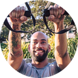

At the top of my list of Interest is travel. I have traveled all over the Untied States and Canada as well as Europe, The Middle East, Mexico and the Caribbean. Below you can find links to some pretty fun travel videos created by yours truly. (disclaimer: I do not own the rights to any of the music lol)
My hobbies vary and on Most days you will find me reading a book or putting my Nintendo Switch to good use, did someone say BOTW? However my ultimate passion is fitness. I have been weight lifting for about 8 years and it has been an incredible addition to my life.
I was introduced to indoor cycling/Spin in 2018 and fell completely in love with it. Before the Pandemic I did about 4-5 Spin classes a week. I am looking forward to getting back on the saddle very soon.